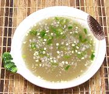

|
Vinegar Garlic Dip with ChiliPhilippine | ||||
| Makes: Effort: Sched: DoAhead: |
1/2 cup * 7 min Yes |
A typical Philippine dipping sauce, used with spring rolls, crisp fried items and roasted meats. Caution: this dip is very much to Philippine taste - it's strong. See also a version without chilis, Vinegar Garlic Dip. | |||
|
|
1/2 5 1/2 1/4 tt |
c cl t t |
Vinegar (1) Garlic Salt Pepper, black Chili, green |
You could probably tame this dip some by reducing the Garlic to 3 cloves. Make - (7 min)
|